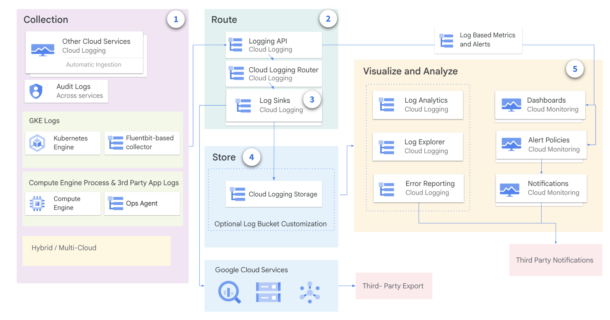
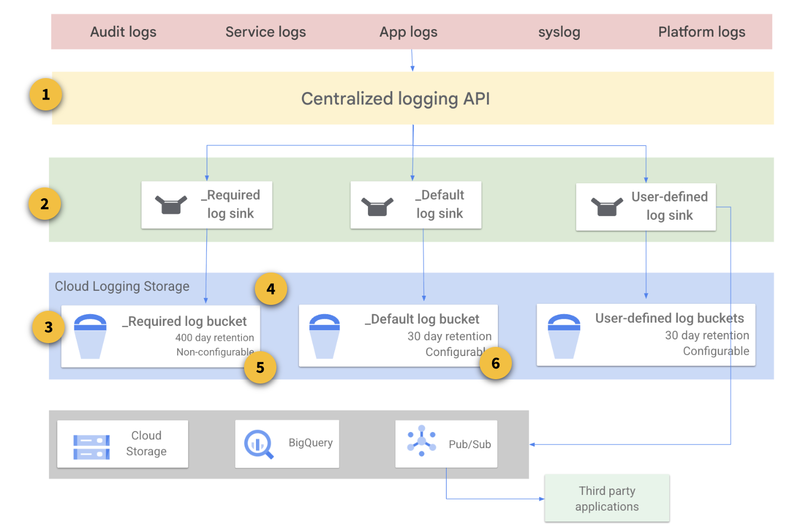

Cloud Logging
-
Cloud Logging is a real-time log-management system with storage, search, analysis, and monitoring support.
-
Cloud Logging automatically collects log data from Google Cloud resources.
- You can also configure alerting policies so that Cloud Monitoring notifies you when certain kinds of events are reported in your log data.
Cloud Logging Use Cases
- Gather data from various workloads: This data is required to troubleshoot and understand the workload and application needs.
- Analyze large volumes of data: Tools like Error Reporting, Log Explorer, and Log Analytics let you focus from large sets of data.
- Route and store logs: Route your logs to the region or service of your choice for additional compliance or business benefits.
- Get Compliance Insights: Leverage audit and app logs for compliance patterns and issues.
Cloud Logging Architecture
Cloud Logging architecture consists of several components:

- Log Collections: These are the places where log data originates. Log sources can be Google Cloud services, such as Compute Engine, App Engine, and Kubernetes Engine, or your own applications.
- Log Routing: The Log Router is responsible for routing log data to its destination. The Log Router uses a combination of inclusion filters and exclusion filters to determine which log data is routed to each destination.
- Log sinks: Log sinks are destinations where log data is stored.
- Store Logs: Cloud Logging supports a variety of log sinks, including:
- Cloud Logging log buckets: These are storage buckets that are specifically designed for storing log data.
- Pub/Sub topics: These topics can be used to route log data to other services, such as third-party logging solutions.
- BigQuery: This is a fully-managed, petabyte-scale analytics data warehouse that can be used to store and analyze log data.
- Cloud Storage buckets: Provides storage of log data in Cloud Storage. Log entries are stored as JSON files.
- Log Analysis: Cloud Logging provides several tools to analyze logs:
- Logs Explorer is optimized for troubleshooting use cases with features like log streaming, a log resource explorer and a histogram for visualization.
- Error Reporting help users react to critical application errors through automated error grouping and notifications.
- Logs-based metrics, dashboards and alerting provide other ways to understand and make logs actionable.
- Log Analytics feature expands the toolset to include ad hoc log analysis capabilities.
Log Types and Collections
Key log categories:
- Platform Logs: written by Google Cloud services (e.g. VPC, Cloud Storage or BigQuery). These logs can help you debug and troubleshoot issues and better understand the services you are using.
- Serverless compute services like Cloud Run and Cloud Run functions include simple runtime logging by default. Logs written to
stdoutorstderrwill appear automatically
- Serverless compute services like Cloud Run and Cloud Run functions include simple runtime logging by default. Logs written to
- Component Logs: similar to platform logs, but they are generated by Google-provided software components that run on your system. For example, GKE provides software components that users can run on their VMs or in their own data centre. Logs are generated from the user's GKE instances and sent to a user's Cloud project.
- Security Logs: they help you answer "who did what, where and when".
- Cloud Audit Logs: provide information about administrative activities and accesses within your Google Cloud resources.
- Access Transparency: provides you with logs of actions taken by Google staff when accessing your Google CLoud content
- User-written logs: written by custom applications and services (e.g. via Ops Agent, Cloud Logging API, Cloud Logging client libraries)
- Multi/Hybrid Cloud Logs: logs from other cloud providers and from on-premises infrastructures
Storing, Routing and Exporting the Logs
Logs can be routed and stored for long-term storage and analysis.
Cloud Logging is a collection of components exposed through a centralised logging API:

- Log Router: Entries are passed through the API and fed to Log Router. Log Router is optimized for processing streaming data, reliably buffering it, and sending it to any combination of log storage and sink (export) locations. By default, log entries are fed into one of the default logs storage buckets. Exclusion filters might be created to partially or totally prevent this behavior.
- Log Sinks: Log sinks run in parallel with the default log flow and might be used to direct entries to external locations.
- Log Storage: Locations might include additional Cloud Logging buckets, Cloud Storage, BigQuery, Pub/Sub, or external projects. Inclusion and exclusion filters can control exactly which logging entries end up at a particular destination, and which are ignored completely.
- Required Bucket: holds Admin Activity audit logs, System Event audit logs, and Access Transparency logs, and retains them for 400 days. You aren't charged for the logs stored in Required, and the retention period of the logs stored here cannot be modified. You cannot delete or modify this bucket.
- Logs Buckets: For each Google Cloud project, Logging automatically creates two logs buckets, _Required and _Default, and corresponding log sinks with the same names. All logs generated in the project are stored in one of these two locations.
- Default Bucket: holds all other ingested logs in a Google Cloud project, except for the logs held in the Required bucket. Standard Cloud Logging pricing applies to these logs. Log entries held in the Default bucket are retained for 30 days, unless you apply custom retention rules. You can't delete this bucket, but you can disable the Default log sink that routes logs to this bucket.
Logs Storage
The Logs Storage page displays a summary of statistics for the logs that your project is receiving.
You can view the total usage by resource type for the current total volume. The link opens Metrics Explorer, which lets you build charts for any metric collected by your project.
- Current total volume: The amount of logs your project has received since the first date of the current month.
- Previous month volume: The amount of logs your project received in the last calendar month.
- Projected volume by End Of Month (EOM): The estimated amount of logs your project will receive by the end of the current month, based on current usage.
Log router sinks and sink locations
Log Router sinks can be used to forward copies of some or all of your log entries to non-default locations. Use cases include storing logs for extended periods, querying logs with SQL, and access control.
There are several sink locations, depending on need:
- Cloud Logging bucket works well to help pre-separate log entries into a distinct log storage bucket.
- BigQuery dataset allows the SQL query power of BigQuery to be brought to bear on large and complex log entries.
- Cloud Storage bucket is a simple external Cloud Storage location, perhaps for long-term storage or processing with other systems.
- Pub/Sub topic can export log entries to message handling third-party applications or systems created with code and running somewhere like Dataflow or Cloud Run functions.
- Splunk is used to integrate logs into existing Splunk-based system.
- The Other project option is useful to help control access to a subset of log entries.
Aggregation levels
A common logging need is centralized log aggregation for auditing, retention, or non-repudiation purposes.
Aggregated sinks allow for easy exporting of logging entries without a one-to-one setup. The sink destination can be any of the destinations discussed up to now.
There are three available Google Cloud Logging aggregation levels:
- Project-level log sink: it exports all the logs for a specific project and a log filter that can be specified in the sink definition to include/exclude certain log types
- Folder-level log sink: it aggregates logs on the folder level and can include logs from children resources (subfolders, projects etc)
- Organisation-level log sink: for a global view, this aggregation can include logs from children resources (subfolders, projects)
Field naming
There are a few naming conventions that apply to log entry fields:
- For log entry fields that are part of the LogEntry type, the corresponding BigQuery field names are precisely the same as the log entry fields.
- For any user-supplied fields, the letter case is normalized to lowercase, but the naming is otherwise preserved.
- For fields in structured payloads, as long as the @type specifier is not present, the letter case is normalized to lowercase, but naming is otherwise preserved. For information on structured payloads where the @type specifier is present, see the Payload fields with
@typedocumentation.
Query and view logs
Once you have collected logs and routed to the right destination, now is the time to query and view logs.
The Logs Explorer interface lets you retrieve logs, parse and analyze log data, and refine your query parameters. The Logs Explorer contains the following panes:
- Action toolbar: Action toolbar to refine logs to projects or storage views, share a link and learn about logs explorer.
- Query Pane: Query pane is where you can build queries, view recently viewed and saved queries and a lot more.
- Results toolbar
- Query results: Query results is the details of results with a summary and timestamp that helps troubleshoot further.
- Log fields: Log fields pane is used to filter your options based on various factors such as a resource type, log name, project ID, etc,.
- Histogram: Histogram is where the query result is visualized as histogram bars, where each bar is a time range and is color coded based on severity.